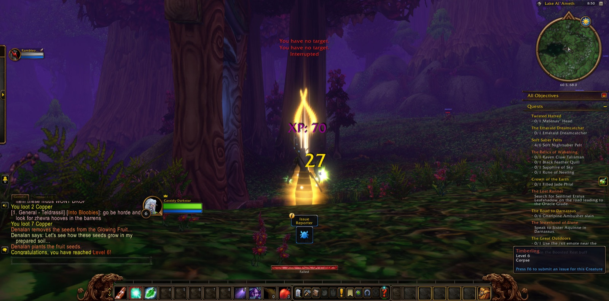
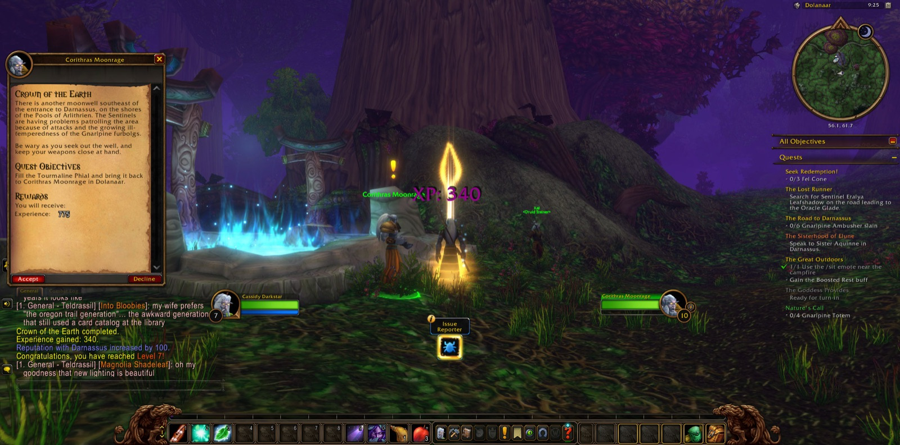
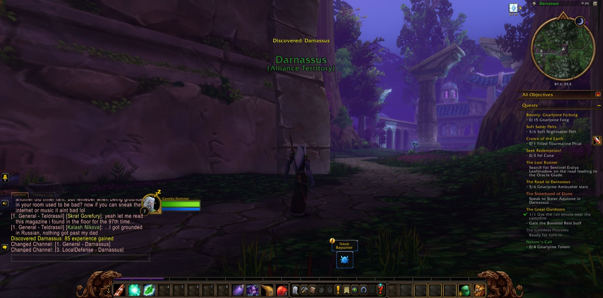

It was near to midnight when Cassidy Darkstar set out from Dolanaar, and he did not go alone. Rambleon, a Hunter, joined him at the outset, and for the better part of an hour the two kept company on the paths of Teldrassil. In Dolanaar Cassidy laid down the matter of the Gnarlpine Corruption and took up two new errands, The Relics of Wakening and Soft Saber Pelts. Then he went down to Lake Al'Ameth, where Denalan's Earth was seen to its end, and afterward among the Nightsabers, whose fangs Zenn had bidden him gather. Webwood Lurkers and Nightsabers fell before him. Yet the road was not kind at first. Three times in that early hour Cassidy fell, twice in the wider wood and once by Lake Al'Ameth, and three times he returned to Dolanaar and went out again.
By the lake he slew his first Timberling, and there he came into the strength of his sixth year of craft; a picture was taken at that moment. He gathered twelve Timberling Sprouts and eight Timberling Seeds, and when those tasks were done Rambleon went another way, some fifty minutes after they had first joined together. One seed Cassidy kept, for he was charged to carry it to Rellian Greenspyre in Darnassus. He met the Gnarlpine Ursa and the Gnarlpine Gardener, and fell once more, and rose again in Dolanaar. At Starbreeze Village he filled the Jade Phial for the Crown of the Earth, and with the silk of the Webwood spiders the last of Zenn's Bidding was done. By the lake he called upon Elune's Light and drew the Shadowmeld about him, as The Goddess Provides required, and afterward he sat for a while beside the campfire, as The Great Outdoors had asked. Returning to Dolanaar, he completed the Crown of the Earth and grew into his seventh year; this too was marked with a picture.
Thence he went west to Ban'ethil Hollow, where the Gnarlpine Ambushers lay in wait, and took up the Bounty on the Gnarlpine Furbolg. He came for the first time to Darnassus, and a picture was taken there, but he turned back to the wood for a time. At the Pools of Arlithrien he filled the Tourmaline Phial and slew a Gnarlpine Shaman and a Webwood Venomfang. Six Ambushers fell in Ban'ethil Hollow, and there Cassidy fell also; but he rose, finished the Crown of the Earth once more, and brought The Road to Darnassus to its close.
In Darnassus he walked long among the terraces. He fulfilled The Sisterhood of Elune and went to the Temple of the Moon, where he took up the Eyes of the Sentinels and Tears of the Moon. In the Cenarion Enclave he delivered the seed to Rellian Greenspyre at last, and was given Tumors in return. Ojoz, a Druid, joined him briefly outside the city gate, for scarcely two minutes; in that short span and after it Cassidy fell thrice more, and each time came back within the walls. Then, patiently, he sought out what the Sentinels would have him know: the Inn upon the Craftsmen's Terrace, the entrance to the Cenarion Hold's depths, the Bank of Darnassus, and the City Gate. When that was done he went out once more and came back to Dolanaar, and there the road lay open before him, as it had at the beginning.

